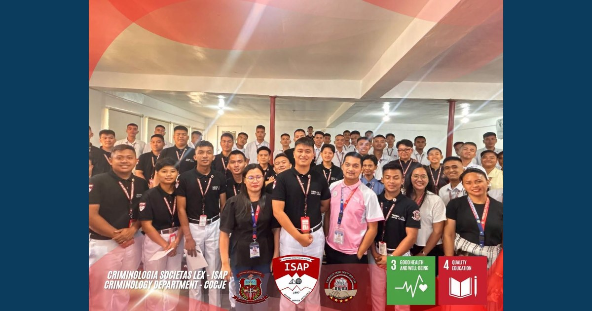

PROJECT RELIEF: Let It Out, Lift It Up! — Project RELIEF Session 2 Equips Students with Healthier Ways to Manage Stress

The College of Criminal Justice Education (CoCJE) continued its student well-being initiative through Session 2 of Project RELIEF: Let It Out, Lift It Up!, focusing on stress management, cognitive reframing, and the development of healthier coping strategies.
Read full article